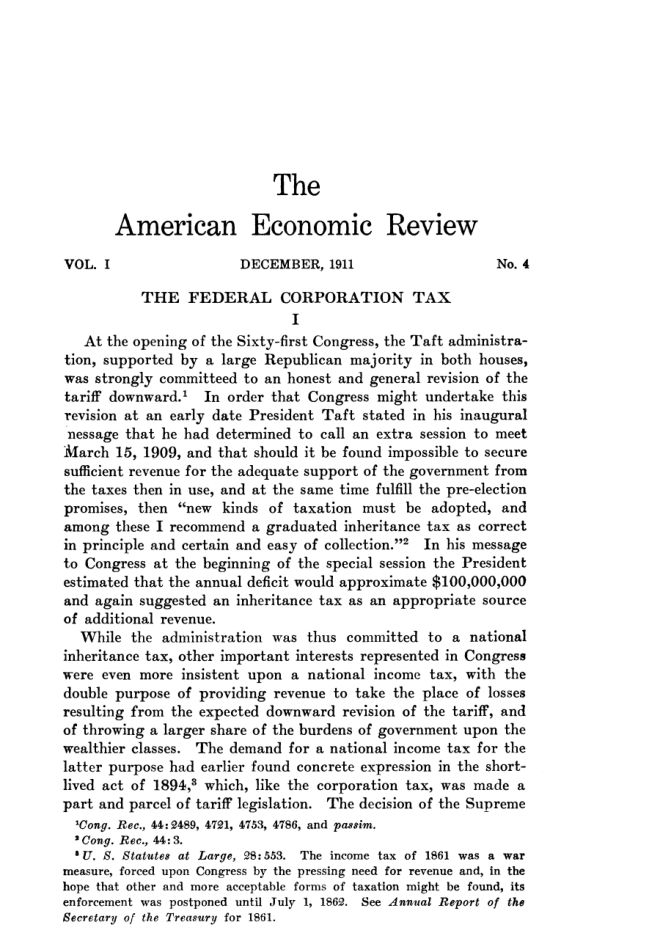

Robinson, 1911: como se mede o lucro de uma empresa?
Leitura: 8 min
Robinson conta como Taft trocou o imposto de renda por um imposto de 1% sobre as sociedades, como o Tesouro reescreveu a lei pela contabilidade e o que as declarações revelaram.


Em março de 1909, ao tomar posse, o presidente Taft anunciou uma sessão extraordinária do Congresso, marcada para 15 de março, para rever a tarifa alfandegária para baixo, como prometera na campanha. Se a receita não bastasse, disse, seria preciso adotar novos impostos, e recomendou um imposto progressivo sobre heranças. Na mensagem de abertura da sessão, estimou o déficit anual em cerca de US$ 100 milhões.
O Congresso tinha outros planos. Desde que a Suprema Corte derrubara o imposto de renda de 1894, a demanda por um imposto que resistisse ao tribunal só crescera. No Senado, o imposto sobre heranças foi retirado do projeto tarifário, e os senadores Bailey, do Texas, e Cummins, de Iowa, apresentaram emendas de imposto de renda que, segundo o senador Root, teriam maioria.
Por que um imposto sobre as sociedades?
Maurice H. Robinson, da University of Illinois, reconstrói a saída do governo. Logo após a posse, Taft pedira ao procurador-geral a minuta de uma lei equivalente ao imposto de renda que respeitasse a Constituição. A minuta dormiu na comissão da Câmara até que, em 16 de junho de 1909, o presidente enviou ao Senado uma mensagem especial: propunha uma emenda constitucional autorizando o imposto de renda e, como substituto imediato, o imposto federal sobre as sociedades. O senador Aldrich apresentou-o no lugar da emenda de imposto de renda.
O imposto daria receita imediata e ajudaria a manter a tarifa alta; para alguns, era um substituto do imposto de renda. A lei foi sancionada em 5 de agosto de 1909, praticamente como apresentada.
Para Aldrich, o imposto de renda “acabará por destruir o sistema protecionista”. (“is sure in the end to destroy the protective system”)
O que é lucro líquido?
A lei cobrava 1% sobre o lucro líquido acima de US$ 5.000, excluídos os dividendos recebidos de outras sociedades sujeitas ao imposto. Em vez de deixar a definição de lucro à prática, o Congresso a escreveu: do bruto se deduziriam as despesas ordinárias e necessárias efetivamente pagas no ano, as perdas efetivamente sofridas, com depreciação razoável, os juros efetivamente pagos e os impostos.
Os contadores protestaram em carta de 8 de julho ao procurador-geral e aos parlamentares. Pediam que se deduzissem as despesas incorridas, as perdas apuradas e os juros acumulados no período, e não os pagos. O procurador-geral respondeu em 12 de julho que a lei fora redigida de propósito para tratar de recebimentos e desembolsos do ano. Para os contadores, seguir cada conta paga até o destino dos materiais exigiria uma segunda contabilidade inteira.
Para os contadores, as definições da lei “violavam todos os princípios da boa contabilidade”. (“violated all the principles of sound accounting”)
A correção veio pela administração. Os regulamentos do Tesouro, de dezembro de 1909, definiram a receita bruta pela diferença entre o preço de venda e o custo das mercadorias, apurado pelo método de inventário, e declararam irrelevante se cada item tinha sido recebido em dinheiro. Houve efeitos colaterais: como o imposto valia para 1909, todas as sociedades precisaram de um inventário em 31 de dezembro de 1908, meses antes de a lei ser proposta, e o regulamento aceitou estimativas; quanto maior o estoque inicial declarado, menor o imposto.
Onde estavam as brechas?
A lei só permitia deduzir juros sobre dívidas até o valor do capital integralizado. Robinson cita uma empresa de serviço público com US$ 12 milhões em títulos de dívida e pouco menos de US$ 6 milhões em ações, que só podia deduzir os juros de metade da dívida. A regra, prevê, levaria as empresas a inflar o capital em ações, a chamada água no capital, até que uma sociedade com menos ações do que dívida virasse uma raridade.
O imposto era, na forma, um tributo sobre o privilégio de operar como sociedade; na substância, um imposto de renda sobre os acionistas. Como a renda absorvida pelos juros não pagava imposto, de duas empresas iguais pagaria menos a que tivesse mais dívida e juros mais altos, e o limite de dedução podia ser contornado com títulos de juros altos ou com novas ações emitidas contra o fundo de comércio. O imposto também poupava firmas individuais e sociedades de pessoas, num país em que as sociedades já respondiam por mais de 75% da indústria.
As holdings ficaram isentas sobre os dividendos recebidos de sociedades tributadas: tributar só as que serviam a monopólios foi julgado impossível, e tributar todas, injusto. Já as seguradoras mútuas foram incluídas; Robinson as vê como instituições que repartem perdas, e não que geram lucro, e atribui a inclusão ao desejo de abrir caminho à supervisão federal do setor.
Sobre as holdings, o Congresso “decidiu ser inconsistente em vez de injusto”. (“Congress, therefore, decided to be inconsistent rather than unjust”)
A publicidade das declarações funcionou?
A lei fazia das declarações registros públicos. A reação veio das sociedades menores, sem ações em bolsa. A Illinois Manufacturers' Association convocou uma conferência em Chicago, em 14 de janeiro de 1910, com mais de duzentos delegados, que pediu a revogação da lei e a suspensão imediata da publicidade. Em 17 de fevereiro, uma decisão do Tesouro observou que o Congresso não destinara verba para expor as declarações e passou a tratá-las como as demais: a publicidade ficou suspensa na prática.
O Congresso destinou então US$ 25.000 para classificar e expor as declarações, mas condicionou a consulta a ordem do presidente. Pelas regras de novembro de 1910, só as declarações das sociedades com títulos oferecidos ao público podiam ser vistas, mediante pedido escrito, e apenas em Washington; as demais, só pelos acionistas. Com as declarações de quatro grandes empresas, Robinson mostra que relatórios anuais e manuais de investimento informavam mais.
O que os números revelaram?
O maior saldo, para Robinson, foi estatístico: o relatório do Commissioner of Internal Revenue de 1910 trouxe, pela primeira vez, o número de sociedades do país, seus títulos e seus lucros, em cinco classes.
Os retornos sobre o capital variavam muito: mais de 14% nas financeiras, 12% no comércio, 4,2% nos serviços públicos. Robinson vê aí um efeito de medida: serviços públicos e muitas indústrias tinham capital inflado, bancos e comércio eram capitalizados de forma conservadora, e as holdings entravam com o capital e sem os dividendos isentos. Cinco estados, de Nova York a Nova Jersey, reuniam menos de um terço das sociedades e mais da metade dos lucros.
Em 13 de março de 1911, a Suprema Corte declarou o imposto constitucional, por unanimidade. Robinson prevê que ele dure alguns anos e que seus traços principais passem a um futuro imposto de renda geral. Fecha com um pedido: que a massa de dados guardada no Tesouro, por ora inútil, seja publicada sob a direção de estatísticos treinados.
Na minha leitura
Na minha leitura, o artigo é um estudo de caso sobre como a base de um imposto decide mais do que a alíquota. A alíquota era de 1%; o que importava era o que contava como despesa, como juros dedutíveis, como depreciação, como estoque inicial. Robinson mostra que cada definição criava um incentivo, e que o mais forte deles era a preferência pela dívida, já que juros saíam da base e dividendos não. O limite de dedução atacava o sintoma e estimulava outra distorção, a inflação do capital em ações.
Também chama atenção a divisão de trabalho entre lei e administração. Uma lei escrita em regime de caixa só funcionou porque o Tesouro a reinterpretou pela contabilidade de competência. E o imposto acabou valendo mais como fonte de informação do que de receita: o primeiro retrato estatístico das sociedades americanas saiu de declarações fiscais, o que antecipa o papel que os dados tributários teriam no estudo das empresas.
Glossário
- Imposto sobre heranças
- tributo sobre a transmissão de patrimônio por morte, recomendado por Taft em 1909.
- Regime de caixa
- registro de receitas e despesas pela data do pagamento, como previa o texto da lei de 1909.
- Regime de competência
- registro de receitas e despesas pelo período a que se referem, como pediam os contadores.
- Método de inventário
- apuração do custo das mercadorias vendidas pelo estoque inicial, mais compras, menos estoque final.
- Água no capital (watered stock)
- emissão de ações acima do valor dos ativos que as sustentam.
- Holding
- sociedade que detém ações de outras sociedades, para investimento ou controle.
- Incremento não ganho (unearned increment)
- valorização de um ativo que não resulta do esforço do proprietário; no regulamento, a valorização das jazidas anterior a 1909.
Fontes
- The Federal Corporation Tax — Maurice H. Robinson (University of Illinois) (pp. 691–723). JSTOR · Internet Archive (PDF)
- Edição completa, com os demais artigos: Nº 116 do Arquivo.
Documento em domínio público (EUA, publicado antes de 1931), via JSTOR Early Journal Content e Internet Archive. Resumo e comentário do autor deste site, sem afiliação com a American Economic Association. Encontrou um erro? Escreva: a correção é publicada no próprio texto, com data.
↑ Nº 116 · Dezembro de 1911: o imposto sobre as sociedades e o que é custo Davenport, 1911: o que custa, de fato, produzir? →